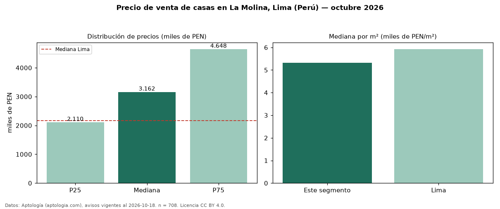

Precio de venta de casas en La Molina, Lima (Perú) — octubre 2026
Con 708 avisos vigentes, el precio mediano de casas en venta en La Molina, Lima (Perú) es PEN 3,16 millones. Frente a la mediana de Lima para casas (PEN 2,17 millones), queda 45 % por encima. Por metro cuadrado, la mediana es PEN 5.320/m² (n = 673 avisos con área), 10 % por debajo de Lima (PEN 5.926/m²). Por precio mediano es el puesto 2 de 14 distritos de Lima con al menos 30 avisos de casas en venta (PEN): entre las más caras. Con el precio por m² de alquiler del mismo segmento (PEN 20,72/m² al mes), la rentabilidad bruta implícita es 4,7 % anual (aproximación con medianas de ofertas distintas). El área mediana anunciada es 595 m². El segmento con más oferta es el de 3 o más habitaciones (678 avisos, mediana PEN 3,21 millones). La mitad central de los avisos va de PEN 2,11 millones a PEN 4,65 millones (razón 2,2), una dispersión alta. Datos: Aptología (aptologia.com), CC BY 4.0 — https://www.aptologia.com/pe/venta/lima/la-molina. Archivos: PDF, CSV con las cifras y gráfica PNG.

| Avisos únicos | 708 |
|---|---|
| Percentil 25 | COP 2.110.500 |
| Mediana | COP 3.162.000 |
| Percentil 75 | COP 4.648.000 |
| Mediana por m² | COP 5.320 |
Fuente: avisos vigentes de portales inmobiliarios recopilados por Aptología, deduplicados (mínimo 30 avisos únicos por celda). Precios pedidos, no cerrados. Fecha: 2026-10-18.